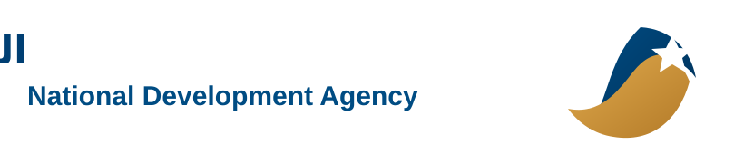

مبادرة الجسر الأزرق الرقمي
مبادرة الجسر الأزرق الرقمي
الرؤية الأصلية للممر اللوجستي الرقمي السيادي لربط الموانئ الليبية بالعمق الأفريقي.
بروتوكول التشغيل: المسار المتعدد
يوّسع المسار الهوية الرقمية للمشغل لتشمل صلاحيات المناولة الجوية، ويربط المحفظة المالية بقطاعي الموانئ والطيران المدني لضمان الامتثال الموحد.
بيان بحر-جو مسبق يفعّل المسار السريع ويحجز حيز التخزين في المطار.
اقتران انتقالي للشاحنة لنقل البضاعة كشحنة مقيدة بين دائرتين جمركيتين.

تفصيل المسار المتعدد بحر - جو
يوسّع التسجيل المزدوج الهوية الرقمية لتشمل صلاحيات المناولة الجوية، بينما يفعّل الإخطار الموحد المسار السريع في الميناء ويحجز مساحة الشحن في المطار قبل وصول السفينة.
تراقب المنصة النقل الأرضي إلى المطار عبر السياج الجغرافي، ثم تتابع مسار الطائرة بالتكامل مع الرقابة الجوية حتى تأكيد المغادرة وإرسال التنبيه المسبق إلى مطار الوجهة.
إعادة هندسة الخدمات المالية والتأمينية
فتح محفظة العبور الرقمية عبر المصارف الليبية يوفر سيولة من العملة الصعبة ويعزز الثقة.
بوليصة عبور شاملة صادرة من شركات التأمين الليبية لإعادة تدوير الأقساط داخل الاقتصاد الوطني.

